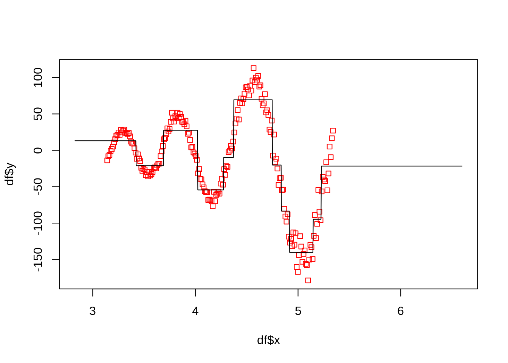

dir <- "~/work/courses/stat380/weeks/week-10/"Agenda:
- Neural networks with hidden layers
Packages we will require this week
packages <- c(
# Old packages
"ISLR2",
"dplyr",
"tidyr",
"readr",
"purrr",
"glmnet",
"caret",
"repr",
"tidyverse",
"torch",
"torchvision",
"torchdatasets",
"mlbench",
# NEW
"nnet",
"rpart",
"e1071"
)
# renv::install(packages)
sapply(packages, require, character.only=TRUE)Thu, Mar 30
ex <- \(x) ifelse(
# sign(x[1] * x[2]) + 0.01 * rnorm(1) <= 0,
(x[1] < 0.5 && x[1] > -0.5 && x[2] < 0.5 && x[2] > 0) ||
(x[1] > 0.5 && x[2] > 0.5 ) ||
(x[1] < 0.25 && x[2] < -0.5),
1, 0
)
n <- 200
X <- t(replicate(n, 2 * runif(2) - 1))
y <- apply(X, 1, ex) %>% as.factor()
col <- ifelse(y == 0, "blue", "red")
df <- data.frame(y = y, x1 = X[, 1], x2 = X[, 2])
plot(df$x1, df$x2, col = col, pch = 19)Xnew <- cbind(
rep(seq(-1.1, 1.1, length.out=50), 50),
rep(seq(-1.1, 1.1, length.out=50), each = 50)
)
df_new = data.frame(x1=Xnew[, 1], x2=Xnew[, 2])
plt <- function(f, x){
plot(x[, 1], x[, 2], col=ifelse(f(x) < 0.5, "blue", "red"), pch=22)
points(df$x1, df$x2, col= ifelse(y == "0", "blue", "red"), pch = 19)
}
overview <- function(f){
predicted <- ifelse(f(df[, -1]) < 0.5, 0, 1)
actual <- df[, 1]
table(predicted, actual)
}f_logistic = \(x)
glm(y ~ x1 + x2, df, family=binomial()) %>%
predict(., x, type="response")
plt(f_logistic, df_new)f_dtree = \(x)
rpart(y ~ x1 + x2, df, method="class") %>%
predict(., x, type="class") %>%
as.numeric(.) - 1
plt(f_dtree, df_new)f_svm = \(x)
svm(y ~ x1 + x2, df, kernel="radial") %>%
predict(., x) %>%
as.numeric(.) - 1
plt(f_svm, df_new)overview(f_logistic) actual
predicted 0 1
0 122 77
1 1 0overview(f_dtree) actual
predicted 0 1
0 121 16
1 2 61overview(f_svm) actual
predicted 0 1
0 114 18
1 9 59Regression with Neural Networks
generate_data <- function(n, noise = 0.1) {
x <- seq(1*pi, 1.7*pi, length.out = n)
y <- exp(x) * (sin(150/x) + rnorm(n, 0, noise))
data.frame(x = x, y = y)
}
df <- generate_data(200, noise=0.1)
plot(df$x, df$y, pch = 19)x_new <- seq(0.9 * pi, 2.1 * pi, length.out=1000)
df_new <- data.frame(x = x_new)
plt_reg <- function(f, x,...){
ynew <- f(x)
ylim <- range(c(ynew, df$y))
ylim[1] <- max(c(-800, ylim[1]))
ylim[2] <- min(c(250, ylim[2]))
xlim <- range(x)
plot(df$x, df$y, pch = 22, col="red", xlim=xlim, ylim=ylim,...)
points(x[, 1], ynew, pch=22, type="l")
}Linear regression
f_lm = \(x)
lm(y ~ x, df) %>%
predict(., x)
plt_reg(f_lm, df_new)Polynomial regression
f_polynomial = \(x)
lm(y ~ x + I(x^2) + I(x^3) + I(x^5), df) %>%
predict(., x)
plt_reg(f_polynomial, df_new)Regression Tree
f_dtree <- \(x)
rpart(y ~ x, df) %>%
predict(., x)
plt_reg(f_dtree, df_new)
SVM
f_svm <- \(x)
svm(y ~ x, df, kernel="radial") %>%
predict(., x)
plt_reg(f_svm, df_new)Neural Network
p <- 1
q1 <- 20
q2 <- 100
reg_module <- nn_module(
initialize = function() {
self$f <- nn_linear(p, q1)
self$g <- nn_linear(q1, q2)
self$h <- nn_linear(q2, 1)
# self$a <- nn_relu()
self$a <- nn_sigmoid()
},
forward = function(x) {
x %>%
self$f() %>%
self$a() %>%
self$g() %>%
self$a() %>%
self$h()
}
)f_nn <- function(x){
F <- reg_module()
X_tensor <- torch_tensor(df$x %>% as.matrix(), dtype=torch_float())
y_tensor <- torch_tensor(cbind(df$y), dtype=torch_float())
optimizer <- optim_adam(F$parameters, lr=0.4)
epochs <- 5000
for(i in 1:epochs){
###
loss <- nn_mse_loss()(F(X_tensor), y_tensor)
###
optimizer$zero_grad()
loss$backward()
optimizer$step()
}
return(as_array(F( torch_tensor(x %>% as.matrix(), dtype=torch_float()) )))
}plt_reg(f_nn, df_new)